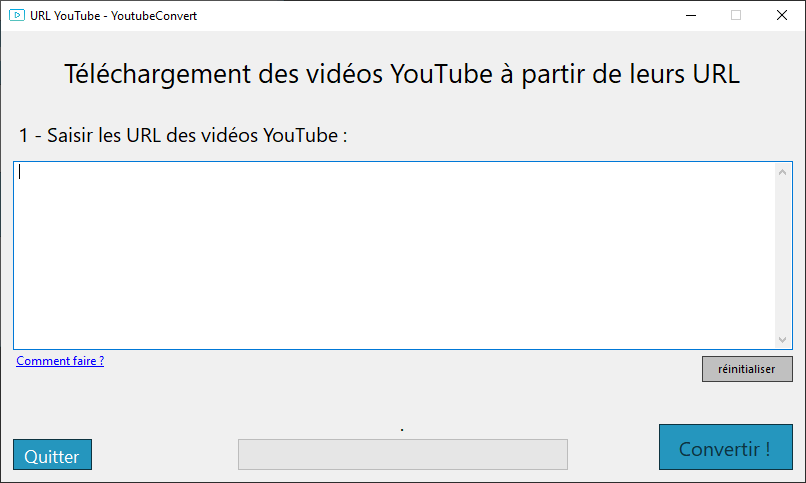
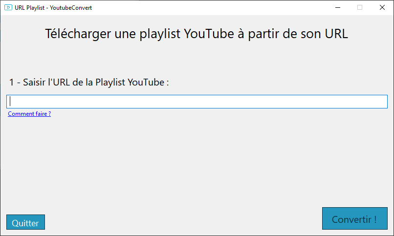
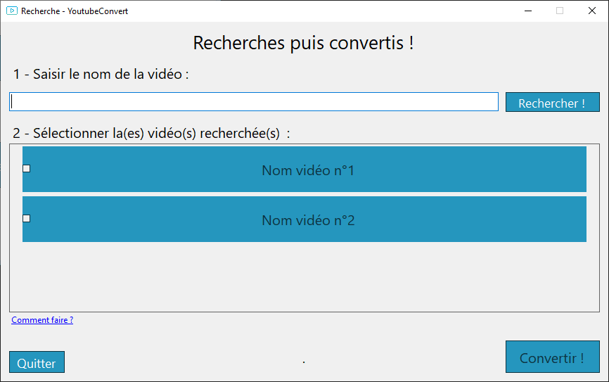

Introduction
Youtube Convert est une application qui permet la conversion de vidéo YouTube au format MP3 (format audio).
Actuellement, vous vous situez sur le site web qui explique en détail le fonctionnement de l'application.
L'application utilise trois différentes méthodes afin de télécharger vos vidéos YouTube au format MP3 :
- Vidéos : Cette méthode permet la convertion direct des URL YouTube au format MP3.
- Playlist : Cette méthode permet la convertion d'une playlist YouTube entière au format MP3.
- Application : Cette méthode permet la recherche des vidéos YouTube et leurs convertion au format MP3 directement dans l'application.
Chaque vidéos YouTube seront téléchargées dans un dossier sur votre bureau !
La page d'accueil se présente ainsi :

Capture d'écran de la page d'accueil de l'application officiel
Chaque rectangle bleu représente les boutons qui vous redirigeront vers la rubrique souhaitée.
Ils sont équivalent aux trois méthodes citées précédemment.
L'utilisation de chaque rubrique est expliqué dans la suite de ce site web.
Téléchargement à partir des URL des vidéos YouTube
Cette méthode permet de convertir des vidéos Youtube à partir de leurs URL.

Capture d'écran de la page "Vidéos" de l'application officiel
Comment télécharger les vidéos au format MP3 ?
1 - Copiez l'URL de votre vidéo sur YouTube.
2 - Collez cette URL dans la zone de texte.
PS : Répétez ces deux étapes si il y a plusieurs vidéos
3 - Appuyez sur le bouton "Convertir" en bas à droite.
La conversion de vos vidéos seront effectué de façon automatique. L'application vous indiquera quand les vidéos au format MP3 auront été installé.
Vous retrouvez l'entiereté de vos MP3 dans un dossier nommé "DownLoaded_Musics" sur le bureau de votre ordinateur.
Téléchargement à partir de l'URL de la Playlist YouTube
Cette méthode permet de convertir des vidéos Youtube contenus dans une playlist à partir de son URL.

Capture d'écran de la page "Playlist" de l'application officiel
Comment télécharger les vidéos de la playlist au format MP3 ?
1 - Copiez l'URL de votre playlist sur YouTube.
2 - Collez cette URL dans la zone de texte.
3 - Appuyez sur le bouton "Convertir" en bas à droite.
La conversion des vidéos dans la playslist seront effectué de façon automatique. L'application vous indiquera quand les vidéos au format MP3 auront été installé.
Vous retrouvez l'entiereté de vos MP3 dans un dossier nommé "DownLoaded_Musics" sur le bureau de votre ordinateur.
Téléchargement à partir de l'application
Cette méthode permert de télécharger vos vidéos au format MP3 directement à partir de l'application.

Capture d'écran de la page "Recherche puis convertis" de l'application officiel
Comment télécharger les vidéos votre recherche au format MP3 ?
1 - Saisir le nom de votre vidéo dans la zone de texte (le plus précis possible).
2 - Appuyer sur le bouton "Rechercher".
PS : Vos recherche apparaîtrons dans la seconde partie de l'application(2).
3 - Cocher les musiques que vous souhaitez télécharger.
4 - Appuyez sur le bouton "Convertir" en bas à droite.
La conversion des vidéos cochées seront effectué de façon automatique. L'application vous indiquera quand les vidéos au format MP3 auront été installé.
Vous retrouvez l'entiereté de vos MP3 dans un dossier nommé "DownLoaded_Musics" sur le bureau de votre ordinateur.
Légales
Vous êtes responsables de toutes les vidéos que vous installerez avec ce logiciel.